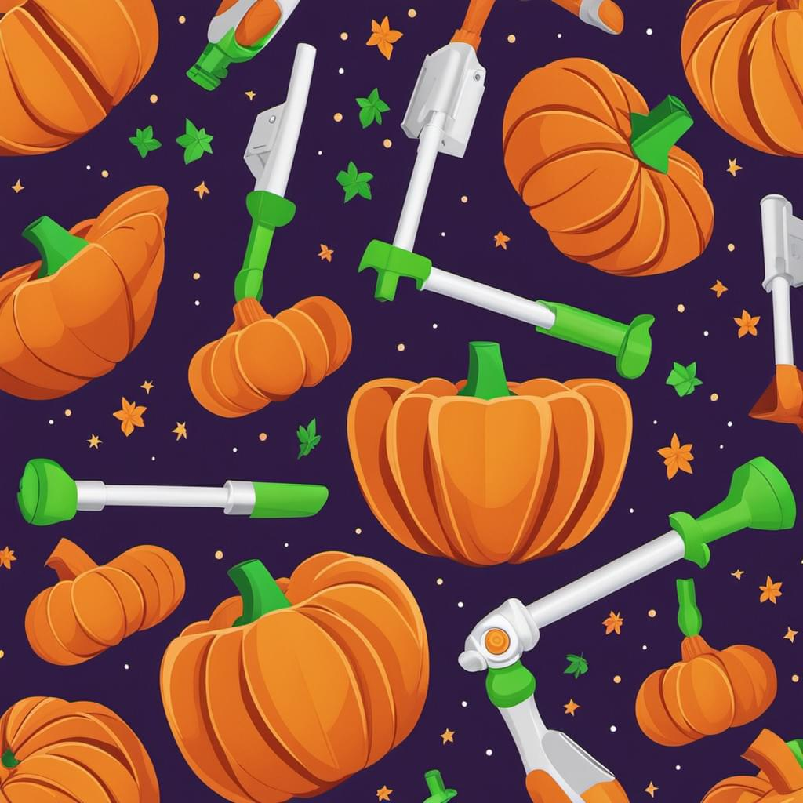

Celebrate the Onset of Fall with NerF
Fall is here, and what better way to celebrate this magical season than with some fun-filled activities using your favorite foam darts - the humble and versatile Nerf toys! So, before the leaves fall and winter settles in, grab your Nerf blaster and let’s dive into some exciting ways to enjoy the cool, crisp air.
🙌 What’s Special About September 21st?
September 21st marks the International Day of Peace, a day dedicated to promoting peace, unity, and non-violence across the globe. What better way to celebrate this occasion than with some friendly Nerf battles that promote teamwork, bonding, and most importantly - PEACE! 💥
🌾 NerF-ty Scavenger Hunt
This autumnal season brings about a cornucopia of delights - including pumpkins, apples, and other fall favorites. Organize a Nerf scavenger hunt where participants must find different varieties of these treats scattered around the neighborhood, or simply in your backyard! The first one to gather all items while avoiding getting hit by foam darts wins! 🎃🍂
🎯 Pumpkin Blast Challenge
It’s the perfect time for pumpkins, so why not incorporate them into your Nerf battles? Set up a game where players take turns trying to hit targets on a makeshift pumpkin stand - and yes, these targets need to resemble pumpkins! This challenges their aiming skills while they get in the Halloween spirit. 🎃🎯
🌟 NerF Night Game
As the days get shorter, turn up the fun at night with a glow-in-the-dark Nerf game. Have players wear bright or glowing clothing while playing in a dimly lit area. All standard Nerf rules apply, but add an extra element of excitement by using specialty Nerf darts that glow under UV light. A thrilling, nighttime adventure awaits! 🌘💛
🎉 The Great NerF Clean-Up
Get in the spirit of the upcoming International Day of Peace and organize a community clean-up event where participants can enjoy a friendly Nerf game after collecting litter around the neighborhood. The blaster becomes a symbol of responsible citizenship, working together to create a better environment. A reward awaits for those with the most collected trash at the end! 🗑️👌
So, as we bid adieu to summer and welcome the crisp air of fall, remember that Nerf is more than just a toy - it’s an excellent way to celebrate this magical season. Enjoy the games, make new friends, or reconnect with old ones, all while fostering peace, unity, and fun! 🎉❤️